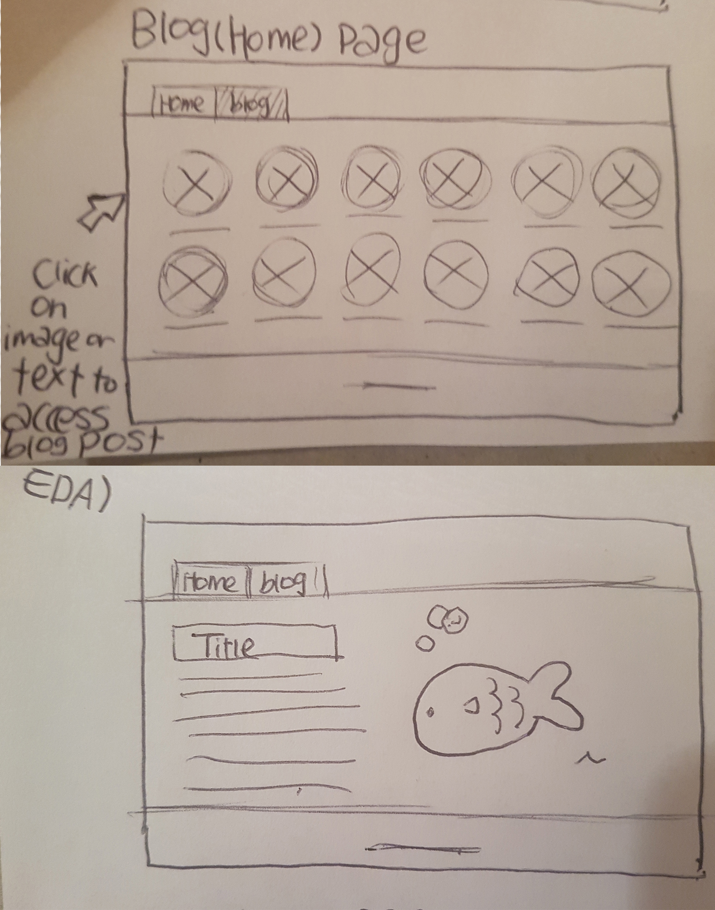
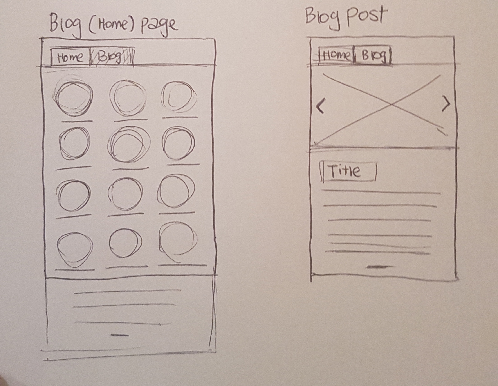
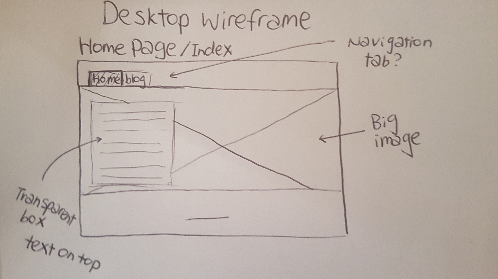
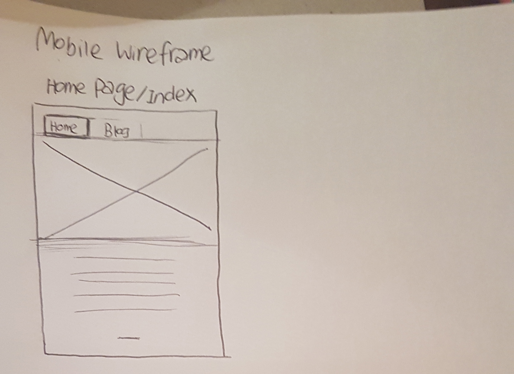

Responsive site is a site that users can easily navigate regardless on what device they are using. In an easy word you can view responsive site on mobiles, i pad, desktop and other devices without the website screen cutting off, text size being too small and so on. Responsive site is important because it is user friendly and it is much more easier to navigate responsive site than the none responsive site.
Mobile first design is when website developers make their html and css file for the website they start off testing this file with a small screen not on the big screen. In easy word they test what website might look like on the mobile screen than desktop screen. Mobile first design is important because if you start off designing on the big screen later on when you would like to design for the small screen website developers would need to take out many elements that they have used for the big screen because they can't fit eveything on a small screen. It is more efficient if you design mobile first.
I guess framework is the basic structure of making the website. This involves columns and rows of the website, navigation that would always be on your site, logo or footer if you need them and so on. Basically If you think of the website as a burger columns, rows, navigation and other things that would always be on the website is hamburger buns and all the other contents that would change would be other ingredients.. The pros of having framework is that it takes less time if you have basic structure of the website and the cons would be because you normally copy and paste this basic structure you might forget how to use certain html or css, and also the layout could get a bit repetitive.
Wireframe is a mock up drawing of your website before you start making the actual one. We use this so we have basic outline of what our website might look like and how the navigation would work and so on.
   At this stage I have struggled to use rows and columns for the blog page but I have partially managed to make similar look but without javascript I don't think I can make a navigation tool that works like a tab.. I can create a tab but it would not look like the wireframe that I have drawn. Otherwise they are similar looking.
design to web blog Working on responsive website